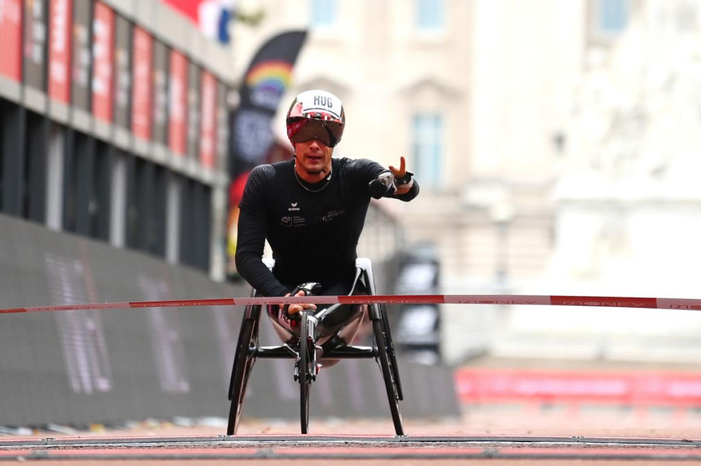

Um pouco mais sobre as Paralimpíadas
A cada quatro anos, o mundo pára para assistir aos Jogos Olímpicos, o maior evento polidesportivo do planeta. Assim também acontece com os atletas que possuem algum grau de deficiência física ou mental. Os Jogos Paralímpicos são o evento polidesportivo realizado entre diferentes modalidades jogadas por atletas com alguma deficiência.
Apesar dessa parceria, cada comitê é independente, possui sua autonomia e está sediado em locais diferentes. De toda forma, a parceria entre os dois foi responsável por avanços significativos na organização dos Jogos Paralímpicos. Essa cooperação, por exemplo, permitiu que eles pudessem ser realizados nas cidades-sede dos Jogos Olímpicos, utilizando a mesma estrutura.
Como mencionado, os Jogos Paralímpicos são organizados para atletas com algum tipo de deficiência física ou mental. As modalidades das Paralimpíadas incluem atletas com deficiências motoras, amputados, cegos e pessoas que sofreram paralisia cerebral. O evento também possui modalidades para atletas com deficiência mental.
Nas Paralimpíadas não existem modalidades específicas para atletas surdos, e esses atletas não podem participar do evento. Isso acontece porque o Comitê Internacional de Desportos de Surdos não é filiado do Comitê Paralímpico Internacional. Os surdos possuem o seu próprio evento polidesportivo, a Surdolimpíadas.
Atualmente, o programa esportivo das Paralimpíadas possui 22 modalidades, que são:
E outros.
Quando surgiu as Paralimpíadas?
Por meio de documentação, sabemos que a prática de esportes entre deficientes remonta à virada do século XIX para o século XX. A prática de esportes entre pessoas com alguma deficiência foi se tornando uma prática comum a partir do momento que a medicina passou a buscar formas de dar aos deficientes mais funcionalidade e melhor qualidade de vida. Considera-se que o pontapé para isso foi realizado pelos britânicos na década de 1940. Em 1944, o Reino Unido estabeleceu um hospital, localizado em Stoke Mandeville, voltado para o tratamento dos soldados feridos na Segunda Guerra Mundial. Era um hospital que se dedicava a soldados com lesões medulares.
A instituição ficou conhecida como Spinal Injuries Centre ou Hospital de Lesionados Medulares, na tradução para o português. Era conduzida pelo médico alemão Ludwig Guttmann, que decidiu implantar práticas esportivas como ferramenta de reabilitação dos pacientes. A partir de 1948, ele estabeleceu uma competição que ficou conhecida como Stoke Mandeville Games. Essa competição tornou-se anual e passou a receber atletas estrangeiros a partir da década de 1950. Em 1960, optou-se por levar os Jogos de Stoke Mandeville para Roma, cidade que sediava as Olimpíadas. Esse evento contou com 400 atletas de 23 países e é considerado o primeiro Jogos Paralímpicos da história.
Em 1964, a competição também foi realizada na cidade-sede da Olimpíadas, que naquele ano era Tóquio. Entre 1968 e 1984, os Jogos Paralímpicos foram realizados em cidades diferentes das cidades-sede dos Jogos Olímpicos porque os comitês dessas cidades não demonstraram interesse em organizar o evento paralímpico.
Foi a partir de Seul, em 1988, que os Jogos Paralímpicos ganharam maior visibilidade. Na capital coreana, os atletas paralímpicos foram permitidos a usar a mesma estrutura dos atletas olímpicos, e isso contribuiu para aumentar a atenção aos primeiros. A mudança de patamar foi tão expressiva que, já em 1989, surgiu o Comitê Paralímpico Internacional.
Desde então, os Jogos Paralímpicos têm ganhado mais espaço na mídia, mais atenção do público, e o financiamento aos atletas paralímpicos cresceu consideravelmente. Além dos Jogos Olímpicos de Verão, são realizados, desde 1976, edições dos Jogos Paralímpicos de Inverno. A primeira participação brasileira nos Jogos Paralímpicos de Inverno aconteceu em 2014.
Como foram as participações brasileiras nas Paralimpíadas?
As práticas esportivas entre deficientes físicos passaram a ser realizadas no Brasil durante a década de 1950, mas a primeira participação brasileira em uma paralimpíada aconteceu somente em 1972. A primeira medalha brasileira foi obtida por Robson Sampaio Almeida e Luís Carlos Coutinho na Bocha, na Paralimpíada de 1976.
A partir da década de 1980, o interesse pelos esportivos paralímpicos cresceu bastante no Brasil, e as primeiras associações desportivas para atletas deficientes começaram a surgir. Entretanto, um Comitê Paralímpico Brasileiro só surgiu em 1995. O investimento em atletas paralímpicos fez do Brasil uma potência na competição.
Desde os Jogos Paralímpicos de Pequim, em 2008, o Brasil ocupou o top 10 no quadro de medalhas, obtendo 47 medalhas em Pequim; 43 em Londres (2012) e 72 no Rio de Janeiro (2016). A participação nos Jogos Paralímpicos de 2016 foi o grande destaque da trajetória brasileira, pois nosso país conquistou 14 medalhas de ouro, 29 medalhas de prata e 29 medalhas de bronze. Terminou na oitava posição no quadro geral.